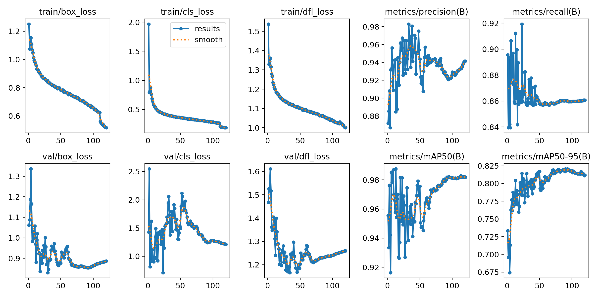
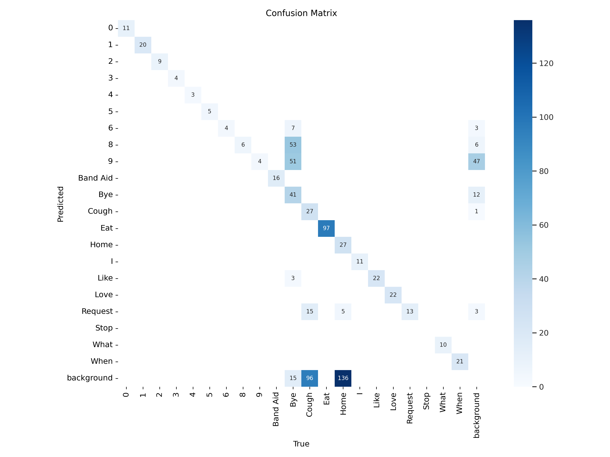
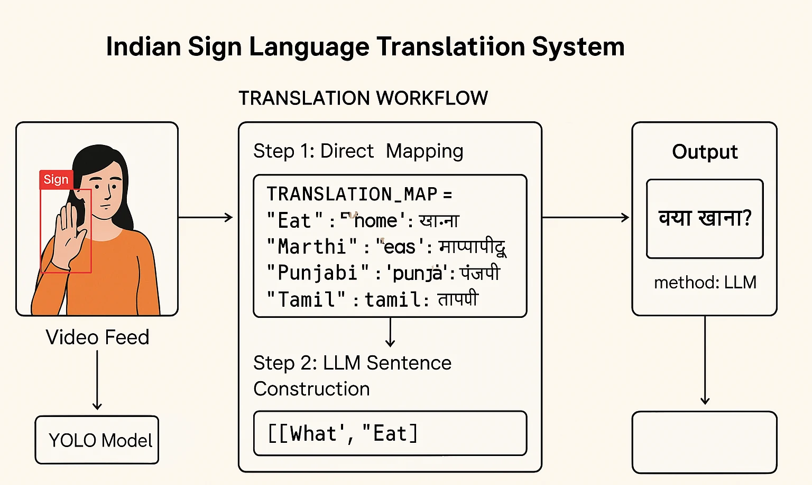

From visual gestures to language.
The system processes a live camera feed, detects sign-language gestures using YOLO-based computer vision, builds the detected gesture sequence into meaningful sentences, and generates translated output through the Gemini API. The repository also includes dataset-creation tooling and notebooks supporting custom YOLO training.
From camera input to translated output.
The Communication Challenge
Sign-language communication requires a bridge between visual gestures and natural language. This project focuses on building a real-time computer-vision workflow capable of recognizing gestures from a live video stream and converting them into understandable language output.
Vision-to-Language Pipeline
A webcam-driven pipeline detects gestures, collects the detected sequence, uses Gemini to generate coherent sentences, and presents translated output through a desktop interface. This combines computer vision, deep learning and language generation within a single application workflow.
From project to application
The repository is centered on local real-time application execution and custom model-training workflows. No verified public deployment URL is currently included.
Inside the Application.


